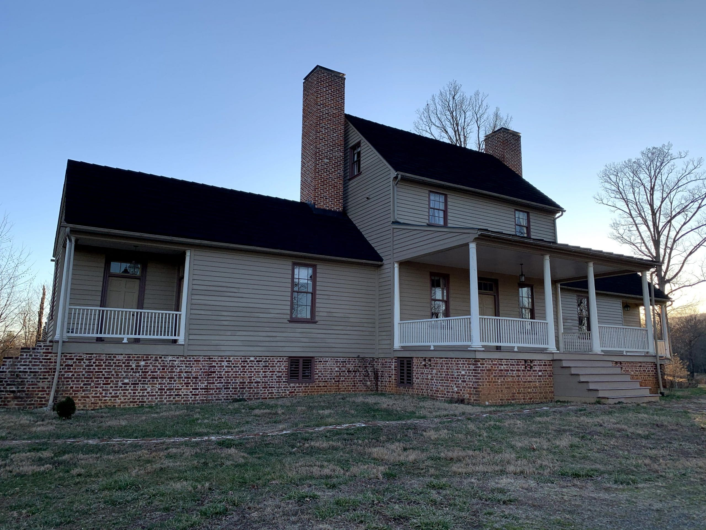

Nature-connected supports that honor dignity and capacity.
We serve individuals with autism, autistic adults, and people with intellectual and developmental disabilities (IDD) who benefit from structured, compassionate services—especially when support needs are high. Our mission is to foster belonging, joy, and meaningful participation through care farming, community connection, and steady, honest practice.

Social-ecological care: land health and human flourishing together.
Autism Sanctuary operates on a social-ecological model: the well-being of our trails, gardens, and animals is intertwined with the psychosocial well-being of participants. Care farming and therapeutic horticulture are not “extras”—they are structured modalities that create predictable, multisensory environments for learning, regulation, and meaningful contribution.
Nature-connected routines—planned with occupational and program guidance—offer multisensory richness (movement, sound, scent, texture) that can help some participants regulate and engage. We also swap passive screen time for hands-on time with animals, trails, and teammates when that fits the day. Individual responses vary; we do not promise uniform medical outcomes.
Emerging research explores links between movement, nature exposure, routine, and whole-body regulation—including interest in how lifestyle factors may interact with the gut–brain axis in some populations. We describe such concepts cautiously and defer individualized medical claims to a participant’s own care team.
What participants experience
- Shared work, shared joy
- Participants contribute to stewardship—caring for land, animals, and one another through roles that build pride and purpose.
- From labels to real life
- We highlight strengths and valued social roles (e.g., gardener, trail buddy) alongside the hands-on supports people need day to day.
- Evidence-based & promising practices
- Training, documentation, and supervision meet regulatory expectations and blend research-backed methods with approaches we have tested and improved on campus.
B.E.E.N.I.C.E.
Belonging
A welcoming community for participants, families, staff, and the neighbors who pitch in.
Enrichment
Growth through purposeful experiences in nature and community.
Enthusiasm
Joy and motivation in meaningful work and connection.
Nature
Farm and trail days, therapeutic horticulture, and fresh air as part of the routine—not an add-on.
Integrity
Honest, accountable practice aligned with licensure and ethics.
Connection & Excellence
Deep partnerships and high standards in person-centered support.
Deepening our home in Albemarle.
2020
Autism Sanctuary launches with a commitment to inclusive, nature-connected supports for people with developmental disabilities.
2023
We become a DBHDS-licensed provider, expanding access to community-based services.
Today
Licensed day, residential, and workplace programs integrate care farming and community engagement.
Tomorrow
We are investing in systems, training, and community partnerships here first. Distant replication stays secondary until this campus is running the way participants deserve. See our campus and future-location interest.